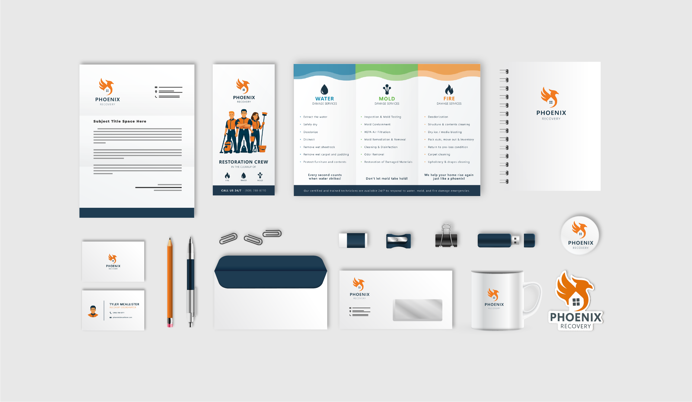
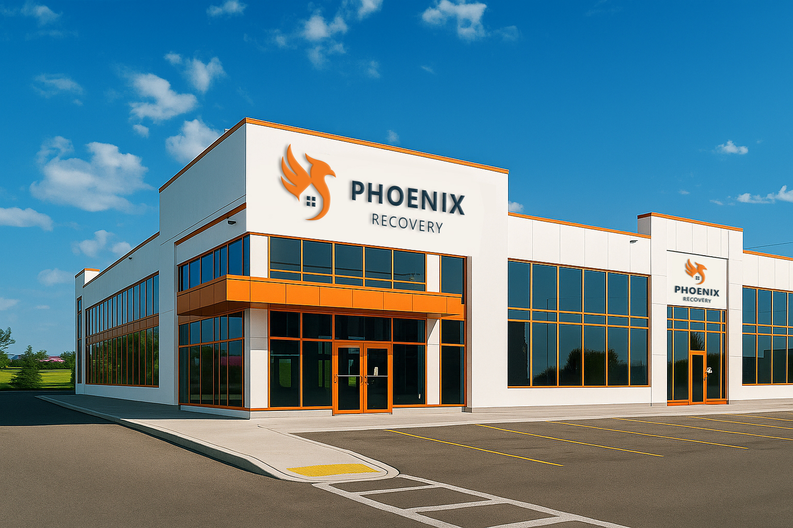

Phoenix
Redesign of ServePro company
A complete brand refresh, including a name change, logo redesign, and updated promotional materials (flyer, business card, and fridge magnet).

Logo
Logo redesign of SERVPRO (Phoenix Recovery).
Business card
Business card redesign of SERVPRO (Phoenix Recovery).
Leaflet
Leaflet redesign of SERVPRO (Phoenix Recovery).


Marketing gadgets
Marketing gadgets redesign for SERVPRO (Phoenix Recovery).


